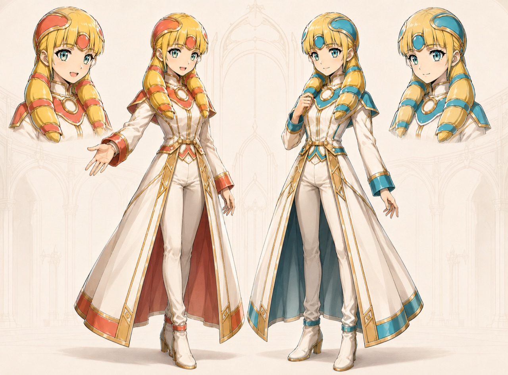
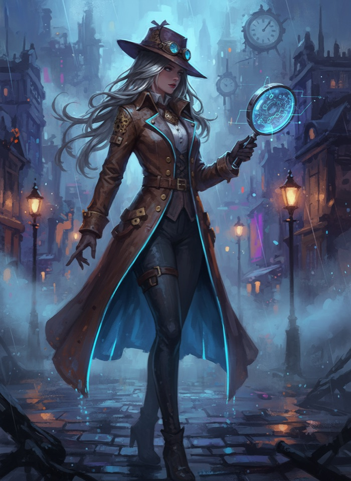

IZAKAYA VERSE · SECOND WAVE
一言から、4つの世界へ。
まず、気になる景色を選んでください。開始テキスト、作例ノベル、V2キャラクターカードを持ち出して、自分のAIで一話を始められます。



IZAKAYA VERSE · SECOND WAVE
まず、気になる景色を選んでください。開始テキスト、作例ノベル、V2キャラクターカードを持ち出して、自分のAIで一話を始められます。

